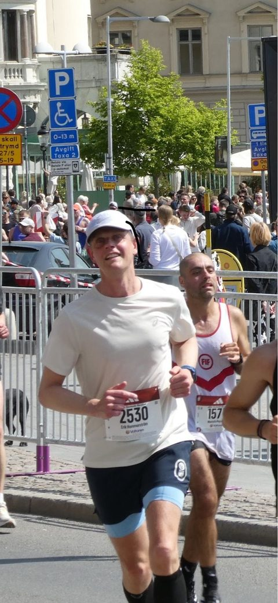

till start
Målet: sub 1:24:00 ≈3:58/km
Norsk sub-threshold som motor. Hälsenan under uppsikt hela vägen.
Mål
| Huvudmål | Malmö halvmara, 3 okt 2026 — sub 1:24:00 (≈3:58/km) |
| Delmål/test | 10 km sub 39:00 (≈3:53/km), ca 19–20 sep, formkontroll |
| Långsiktigt | Hannovermaraton ~apr 2027 — måste 3:00, riktigt bra 2:57, dröm 2:53:30 (slå PB 2:53:48) |
Utgångsläge (baslinjer)
Senaste formella avstämning
Gult 12 jul 2026 — se Analys & avstämningar för full bedömning.
Begränsande faktor: vänster hälsena/akilles (DNF maj-25). Excentriska vadlyft dagligen, kontrollerad upptrappning.
13-veckorsblocket
6 jul – 3 okt 2026 · 6 löppass + 2 styrkepass/vecka. Aktuell vecka är markerad. Källa: Malmo_halvmara_plan_2026.xlsx
| Vecka | Mån | Tis | Ons | Tors | Fre | Lör | Sön | Km |
|---|
| Vecka | Mån | Tis | Ons | Tors | Fre | Lör | Sön | Km (plan) |
|---|
Fasöversikt
| Fas | Veckor | Fokus | Volym (km/v) |
|---|---|---|---|
| 1. Basåterställning | v.1–4 | Lugn volym + stridar; sub-threshold från v.3 | 52 → 65 |
| 2. Tröskelutveckling | v.5–8 | Två sub-threshold-pass/v, växande långpass | 71 → 76 |
| 3. Skärpning | v.9–11 | VO2max + HM-specifikt, 10k-test | 76 → 77 |
| 4. Tapering & lopp | v.12–13 | Sänkt volym, bibehållen skärpa, Malmö 3/10 | 57 → lopp |
Bärande principer
- Bygg om den lugna basen — den kollapsade i våras. Lätt ska vara riktigt lätt.
- Norsk sub-threshold som motor: mängd kvalitet strax under tröskeln (puls ≤163), låg trötthetskostnad.
- 80/20: ~80% lugnt, ~20% hårt. Ingen gråzon.
- Kontrollerad upptrappning för hälsenan: max ~10% volymökning/vecka, avlastning v.4 & v.8, excentriska vadlyft.
- Tröskeltempot autoregleras varje vecka utifrån pulssvar (höj ≤158 / håll 159–163 / sänk >163).
Styrka – 2 pass/vecka
Block 1 (v.1–4): kettlebell + kroppsvikt. Block 2 (v.5–13): + skivstång/hantlar. Pass A = styrka/kraft, Pass B = stabilitet/prehab.
Pass A – styrka/kraft (block 1)
- Goblet squat (KB) — 3×8
- Rumänsk marklyft (KB) — 3×8
- Kettlebell swing — 3×12
- Bulgarisk split squat (KB) — 3×8/ben
- Planka — 3×40s
Pass B – stabilitet/prehab (block 1)
- Enbens rumänsk marklyft (KB) — 3×8/ben
- Höftlyft/glute bridge — 3×12
- Sidoplanka — 3×30s/sida
- Clamshells — 3×15/sida
- Bird-dog — 3×10/sida
- Enbensstående balans — 3×30s/ben
Excentriska vadlyft körs separat, dagligen — 2–3 dagar/v med vikt, övriga kroppsvikt. Kontrollerat (0–3 i smärta), inte värre dagen efter.
VO2max-utveckling
Sedan april 2025
VO2max: 56 (16 jul 2026) — jämfört med toppen 61 (nov-25) och baslinjen 57 (jun-26).
Topp 61 (nov-25) efter stor lugn bas ("productive"). Föll till 56–57 under vårens överbelastning (mar–jun 26). Uppföljningsmarkör: VO2max ska vända uppåt mot 60+ under blocket — stagnation/fall = för hårt, för lite vila.
Tempo i pulszoner över tid
Minuter per pulszon och månad (Karvonen/pulsreserv, vila ~45, uppskattad maxpuls 184). Källa: Garmin hrTimeInZone, summerat per månad.
Zondefinitioner
| Zon | % pulsreserv | Puls (bpm) | Motsvarar |
|---|---|---|---|
| Zon 1 – Återhämtning | 50–60% | 114–128 | Djup återhämtning |
| Zon 2 – Lätt aerob | 60–70% | 128–142 | Mål: merparten av lugna pass |
| Zon 3 – Aerob/tempo | 70–80% | 142–156 | Övre delen av "lugnt" |
| Zon 4 – Tröskel/HM-fart | 80–90% | 156–170 | Tröskel + HM-fart |
| Zon 5 – VO2max/anaerobt | 90–100% | 170–184 | VO2max-pass, stridar |
Tempo/puls per passtyp
| Pass/zon | Tempo (min/km) | Puls (bpm) | Känsla |
|---|---|---|---|
| Återhämtning | 5:15–5:40 | <140 | Mycket lätt, prata fritt |
| Lugnt/distans | 4:55–5:20 | 140–150 | Konversationstempo |
| Tröskel (sub) | 4:00–4:08 | 158–163 | Kontrollerat tungt, korta meningar |
| HM-fart (mål) | 3:58 | 160–166 | Ansträngande men jämnt |
| 10k-fart | 3:50–3:54 | 166–172 | Hårt |
| VO2max/intervall | 3:35–3:45 | 172–180 | Mycket hårt |
| Stridar (15–20s) | ~3:20-känsla | – | Avspänt snabb, ej maxa |
Senaste passen Ögonblicksbild 17 jul
| Datum | Pass | Distans | Snittfart | Snittpuls | Träningseffekt |
|---|---|---|---|---|---|
| 2026-07-16 | Norrtälje Löpning (8×1 min pickups) | 8,01 km | 4:51/km | 148 | LACTATE_THRESHOLD |
| 2026-07-15 | Norrtälje Löpning (9k + 6 stridar) | 9,39 km | 4:59/km | 128 | AEROBIC_BASE |
| 2026-07-14 | Norrtälje Löpning (9k + 8 stridar) | 10,01 km | 4:56/km | 137 | TEMPO |
| 2026-07-13 | Sollentuna Löpning | 7,27 km | 4:59/km | 141 | TEMPO |
| 2026-07-12 | Sollentuna Löpning (pickups) | 8,39 km | 4:52/km | 146 | LACTATE_THRESHOLD |
Läget den 17 juli 2026
ÖgonblicksbildSenaste veckoavstämning — 12 jul 2026
GultVecka 1 (6–12 jul) av 13 mot Malmö halvmara. Fas: återstart – bara lugnt + stridar, inget tröskelpass än (första v.3, 20–26 juli).
Nyckeltal
- Vilopuls: 43–49 hela veckan (baslinje ~45) – normalt
- HRV (12/7): snitt natt 63 ms, inom balanserat intervall (58–78), men Garmins trend flaggade ändå "UNBALANCED" — troligen känslig algoritm
- Sömn: sömnbehovet krupit upp igen ("CHRONIC"), kvalitet 76/100 (FAIR), lite deep sleep
- VO2max: 56 (från 57 – brus, ej oroande)
- ACWR: 1,3 — Garmin klassar "OPTIMAL" men i övre delen av intervallet
Genomförda pass (6–12 jul)
| Dag | Pass | Distans | Snitt | Kommentar |
|---|---|---|---|---|
| Mån 6/7 | Lugnt | 6,07 km | 4:53/km | Enligt plan |
| Tis 7/7 | Lugnt (Skärgårdsrunda) | 8,21 km | 5:07/km | Stridar ej gjorda |
| Ons 8/7 | 12k inkl 6 stridar + Styrka A | 12,07 km | 4:59/km | Längre än planerat, dubbelpass |
| Tors 9/7 | Återhämtningsrunda | 6,01 km | 5:17/km | Pickups ej gjorda |
| Fre 10/7 | Styrka B | – | – | Enligt plan |
| Lör 11/7 | Första korta långpasset | 14,02 km | 4:59/km | Långpass flyttat hit |
| Sön 12/7 | Pickups 8×1 min | 8,39 km | ~4:00/km | Föreskrivet 4:20–4:40/km — för snabbt |
Total ≈54,8 km mot planerade 52 km (+5%).
Bedömning
Volymen var i linje med planen — inte mängden som var problemet. Mönstret stack ut: långpasset flyttades till lördag och pickuppasset (kört klart snabbare än föreskrivet) hamnade dagen efter på söndagen — två relativt tunga dagar back-to-back rakt på den vävnad som redan är känd som begränsande (hälsenan). Höftstelhet dök upp efter just den kombinationen. Enligt principen "två samtidiga signaler = dra ner" är läget att hålla hårdare i strukturen kommande vecka.
Rekommendationer
- Kör veckans dagar i planerad ordning — flytta inte långpass/kvalitetspass tätt inpå varandra.
- Pickups/stridar ska kännas kontrollerade — spara "ta ut sig"-känslan till tröskelblocket v.3 där pulstaket skyddar.
- Bevaka hälsena och höft dagligen — vid kvarstående besvär, byt kvalpass mot lugnt/vila.
- Fortsätt excentriska vadlyft dagligen.
Trend – historik (senaste avstämningarna)
- 2026-07-07: Blockstart v.1. Flagga: pulsdrift på lugnt pass dag 1 (131→149 bpm).
- 2026-07-08: Gult → Grönt. Pulsdisciplin förbättrad, sömnbehov tillbaka på baslinje.
- 2026-07-12: Grönt → Gult. Ordning omkastad, öm hälsena + höftstelhet samtidigt, ACWR upp till 1,3. v.2-planen justerad (nedskalad pickup-progression, förstärkt pace-instruktion).
Om Erik

Personbästa
| Distans | Tid | Lopp |
|---|---|---|
| 5 km | 18:08 | Convinistafetten |
| 10 km | 39:48 | Hässelbyloppet |
| Halvmaraton | 1:24:39 | Kungsholmen runt |
| Maraton | 2:53:48 | Stockholm Marathon |
Mål 2026 Persa på alla distanser utom maraton — 5 km, 10 km och halvmaraton.
Löparresan i korthet
- Främsta begränsning som löpare: återhämtning och senhälsa (vänster hälsena/akilles), inte arbetskapacitet.
- 2014: Inledde löparresan med ett Kungsholmen runt.
- 2014–2018: Renodlad maratonsatsning — sprang nästan uteslutande maraton (undantaget Bellmansstafetten, 5 km) och tog tre lopp under 3 timmar: Berlin, New York och Stockholm.
- Efter 2018: Höll igång utan att träna lika hårt — dels begränsad av hälsenan, dels fokus på annat i livet.
- 2024: Startade om löparresan på allvar med Stockholm Marathon.
- 2025: Inledde den riktigt seriösa satsningen mot Stockholm Marathon 2025.
- Maj 2025: DNF vid 25 km, Stockholm Marathon — pga hälsenan, trots att formen var i toppklass (4:05–4:13/km på puls 156–162).
- Maj 2026: Fullföljde Stockholm Marathon på ca 3:19 efter en bonk vid ~14 km — startade i tröskelfart från kilometer 1.
- Svarar mycket bra på norsk sub-threshold-träning (infördes okt 2025) — stor mängd kvalitet strax under tröskeln.
- Nästa mål: Malmö halvmara 3 okt 2026 (sub 1:24), därefter siktar långsiktigt mot Hannover-maraton ~apr 2027 för att slå PB:t.
Här kommer snart en text om löparresan, drivkraften och vägen mot Malmö och Hannover — skickar den när den är klar.